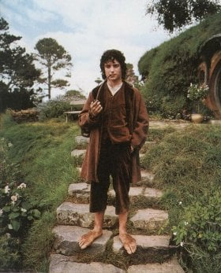
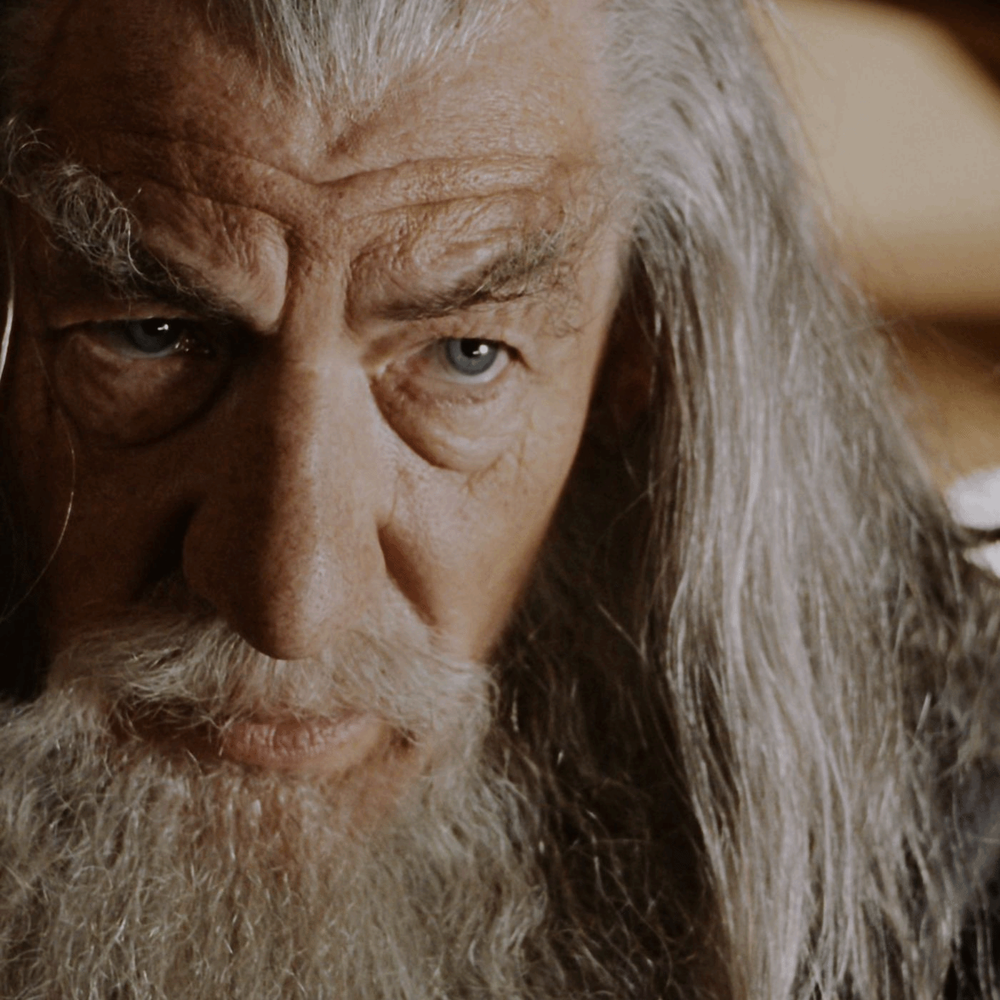
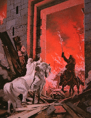
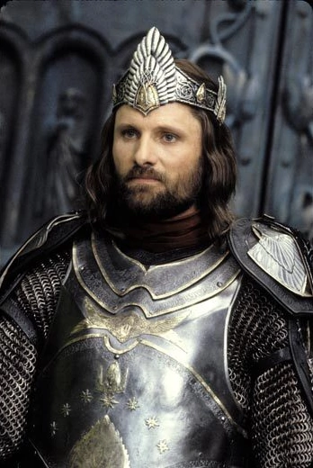

Copyright - Branden Morgan, 2021
Differences Of Film & Book

About Us
Book Trivia
Film & Book
Data Visualization
Story Share
Home
Frodo is considerably younger in the film than the book. In the book, he begins his quest at age 50, 17 years after Bilbo's 111th birthday and the passing of the One Ring from Bilbo to Frodo. In the film, this gap does not appear to exist; while there is time between the party and Gandalf's reappearance, Frodo's youthful appearance does not support a gap of 17 years.
The film also positions Merry and Pippin as age-contemporaries to Frodo and Sam, a dynamic not seen in the book, where they are quite a bit younger (Merry is 36 and Pippin is 28). This timeline shift of the trilogy alters other aspects of the film-verse timeline, such as the birth year of Aragorn, since he states his age, 87, in The Two Towers to Eowyn.
In the books, Gandalf does not get all pushed out of shape and hysterical about Frodo needing to leave immediately. They both agree that immediate disappearance would be a bad idea because it would lead to rumors flying around. It was April when the fire test was done, and Frodo didn’t leave til September, six months later. In the meantime he came up with a cover story — he was selling Bag End to the Sackville Bagginses to move to a small house in his native Buckland on the edge of the shire. The idea is that it would be really easy for Frodo to slip out of the shire from that location.


The Battle of the Pellenor Fields (at Minas Tirith) is portrayed quite differently in the book (Return of the King). The witch king does not break Gandalf’s staff, as in the film. When the battering ram breaks down the main gate of the city, it is not cave trolls that enter, as in the movies, but the Witch King of Angmar on his flying serpent. He does say to Gandalf his hour of death has arrived. But just at that moment the horns of the army of Rohan sound and the Witch King flies off.


A very important scene in the book is completely left out of the movie. After the whole scene at the black gate, when Sauron is finally defeated by the ring falling into the fiery magma at Mount Doom, Aragorn and his forces return to Minas Tirith. But Aragorn refuses to enter the city. He says that he is not the king and the people must first accept him as king before he will take power. This fits in with the whole idea of Aragorn being torn or conflicted about power. At that point Faramir as Steward asks the assembled masses — city residents, soldiers — “Shall the heir of Isildur and wielder of the reforged sword be accepted into the city as king?” And the whole crowd yells “Yes” with one voice.